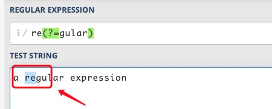
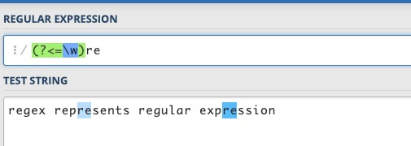
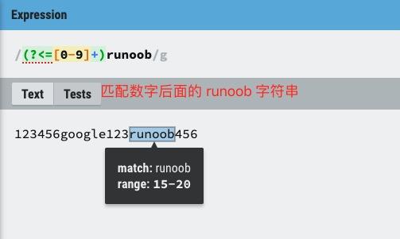

In regular expressions, a zero-width assertion is a special construct that does not consume characters during matching; it only performs conditional checks on the match position. This is very useful for some complex pattern matching because it allows you to add conditions before or after the match position, thereby controlling the match more precisely.
There are 4 forms of lookahead and lookbehind assertions in regular expressions:
- (?=pattern)Zero-width positive lookahead assertion
- (?!pattern)Zero-width negative lookahead assertion
- (?<=pattern)Zero-width positive lookbehind assertion
- (?<!pattern)Zero-width negative lookbehind assertion
Here,patternis a regular expression.
Just as^represents the beginning,$represents the end,\band represents a word boundary, lookahead and lookbehind assertions have a similar effect: they only match certain positions and do not occupy characters during the matching process, so they are called"zero-width". The so-called position refers to the left of the first character, the right of the last character, and the middle between adjacent characters in a string (per line), assuming the text direction is left-to-right.
Concept explanation:
- Zero-width: It only matches positions. Zero-width means that the assertion does not "consume" characters during matching; it merely performs conditional checks on the position, and does not include characters before or after the match position in the match result.
- Lookahead: Indicates that the assertion occurs before the match position.
- Lookbehind: Indicates that the assertion occurs after the match position.
- Positive: Matches the expression inside the parentheses, that is, the condition judged by the assertion is affirmative; the match succeeds only when the condition holds.
- Negative: Does not match the expression inside the parentheses, that is, the condition judged by the assertion is negative; the match succeeds only when the condition does not hold.
Below, examples are given to illustrate the meaning of these 4 assertions.
(?=pattern) Positive lookahead assertion
Represents a position in the string; the character sequence immediately after this position can match pattern.
For example, for"a regular expression"this string, if you want to match the re in regular but not the re in expression, you can usere(?=gular), this expression constrains the position to the right of re; after this position is gular, but it does not consume characters such as gular.

Change the expression tore(?=gular)., it will match reg; the metacharacter.matchesg, and the parentheses section matcheseandgthe position between.
(?!pattern) Negative lookahead assertion
Represents a position in the string; the character sequence immediately after this position cannot match pattern.
For example, for"regex represents regular expression"this string, if you want to match the re other than those in regex and regular, you can usere(?!g), this expression constrainsrethe position to the right; after this position is not the characterg。
The difference between negative and positive is whether the characters after that position can match the expression in parentheses.

(?<=pattern) Positive lookbehind assertion
Represents a position in the string; the character sequence immediately before this position can match pattern.
For example, forregex represents regular expressionthis string, there are 4 words; if you want to match the re inside words but not the re at the beginning of words, you can use(?<=\w)re, for the re inside a word, there should be a word character before re.
It is called a lookbehind assertion because when the regex engine matches a string against an expression, it scans the characters in the string from front to back one by one and checks whether they match the expression. When it encounters this assertion in the expression, the engine needs to check already-scanned characters toward the front of the string, which is backward relative to the scanning direction.

(?<!pattern) Negative lookbehind assertion
Represents a position in the string; the character sequence immediately before this position cannot match pattern.
For example, for"regex represents regular expression"this string, if you want to match the re at the beginning of words, you can use(?<!\w)re. The re at the beginning of a word,re, in this example, refers to the re that is not inside a word,re, that is,rethe character before it is not a word character. Of course, you can also use\breto match.

To understand these 4 assertions, you can approach them from two aspects:
-
1. Regarding lookahead and lookbehind:When the regex engine performs matching between a string and an expression, it continuously scans the characters in the string from beginning to end (front to back). Imagine a scanning pointer pointing at a character boundary and moving along with the matching process. For a lookahead assertion, when the scanning pointer is at a certain position, the engine tries to match characters that the pointer has not yet scanned, arriving at those characters before the pointer, hence the name lookahead. For a lookbehind assertion, the engine tries to match characters that the pointer has already scanned, arriving after the pointer, hence the name lookbehind.
-
2. Regarding positive and negative:Positive means matching the expression in parentheses; negative means not matching.
Memory aids for these 4 assertion forms:
-
1. Lookahead and lookbehind:The lookbehind assertion(?<=pattern)、(?<!pattern)contains a less-than sign, which is also an arrow. For the left-to-right text direction, this arrow points backward, which also matches our convention. Removing the less-than sign gives the lookahead assertion.
-
2. Positive and negative:Not equal to(!=), logical NOT(!)are both represented by!the ! sign, so the form with!the ! sign indicates no match, negative; replace!the ! sign with=the = sign, which indicates match, positive.
We often use regular expressions to check whether a string contains a substring. It is also easy to express that a string does not contain a certain character or certain characters; simply use[^...]the form. But how do you express that a string does not contain a certain substring (composed of a character sequence)?
use[^...]This form will not work. In that case, you need to use (negative) lookahead or lookbehind assertions, or use both simultaneously.
For example, to determine whether a sentence containsthis, but does not containthat。
containsthisis easy to handle; a sentence that does not containthat, it can be considered that the character before every character in the sentence is notthator the character after every character is notthat. The regular expressions are as follows:
^((?<!that).)*this((?<!that).)*$ 或 ^(.(?!that))*this(.(?!that))*$
Forthis is example testthis sentence, both expressions can match successfully, whilethis and that is example testall fail to match.


In general, these two expressions can basically meet the requirements. Consider edge cases, such as when a sentence starts withthatand ends withthat, or whenthatandthisare concatenated, the above expressions may be inadequate.example thatthis is the caseorthis is the case, not thatetc.
As long as you use these assertions flexibly, it is easy to solve:
^(.(?<!that))*this(.(?<!that))*$ ^(.(?<!that))*this((?!that).)*$ ^((?!that).)*this(.(?<!that))*$ ^((?!that).)*this((?!that).)*$
These 4 regular expressions were tested against the above sentences, and the results all meet the requirements.
For the above 4 assertions, the pattern inside the parentheses is itself a regular expression. However, there are restrictions on the 2 lookbehind assertions. In Perl and Python, the expression must be of fixed length, that is, it cannot use*、+、?metacharacters such as(?<=abc)is fine, but(?<=a*bc)is not supported. In particular, when the expression contains branches connected by |, all branches must have the same length. The reason variable-length expressions are not supported is that the engine cannot determine how many steps to backtrack when checking a lookbehind assertion. Java supports?、{m}、{n,m}symbols such as, but also does not support*、+the character. Javascript simply does not support lookbehind assertions, but generally speaking, this is not a big problem.
Lookahead and lookbehind assertions are to some extent like usingifstatements to validate the characters before and after the match.
The following lists the usage of ?=, ?<=, ?!, ?<!=
exp1(?=exp2): Find exp1 before exp2.

(?<=exp2)exp1: Find exp1 after exp2.

exp1(?!exp2): Find exp1 not followed by exp2.

(?<!=exp2)exp1: Find exp1 not preceded by exp2.

Reference link: https://blog.51cto.com/cnn237111/749047